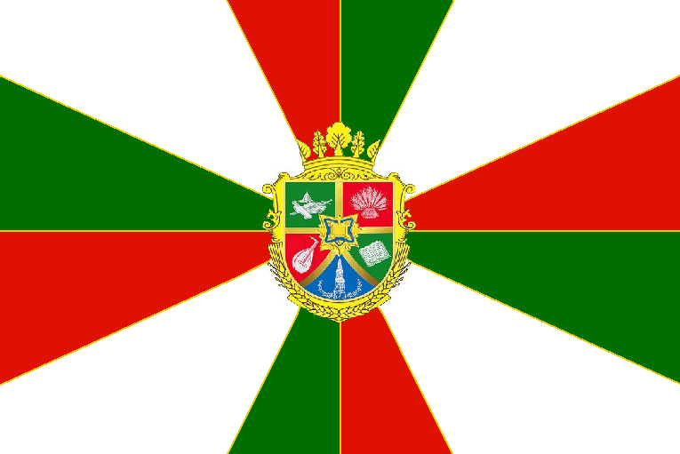

Путешествие по Украине
На главную
Новости
Галерея
Флаги районов Харьковской области
Флаг Богоду́ховского района
Флаг Красногра́дского района

Флаг Ку́пянского района
Флаг Лозо́вского района
Флаг Ха́рьковского района
Флаг Чугу́евского района
Флаг Изю́мского района